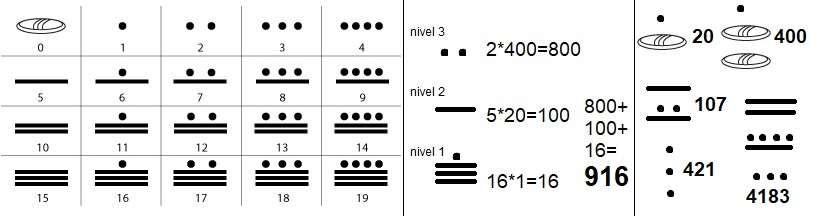

Tutorial
La cultura maya fue una civilización mesoamericana que duró mas de 20 siglos desde el 2000 a.C, con numerosos aspectos socioculturales como su escritura jeroglífica, su arte, la arquitectura, su mitología y sus notables sistemas de numeración, así como astronomía y matemáticas. Se desarrolló en el sureste de México, Guatemala y Belice, la parte occidental de Honduras y en El Salvador, abarcando más de 300,000 km2.
Su sistema numérico tenía base 20, apoyada a su vez por un subsistema base 5. Cada unidad era representada por una bolita, al alcanzar 5, se borraban las bolitas y se trazaba una raya, y las demás unidades iban arriba de esa raya. Al alcanzar 4 rayas, es decir, 20 unidades, se ponía una bolita en un nivel superior al anterior, ahora éste teniendo un símbolo de 0. Y así se podía seguir por cuantos niveles fuera posible.
Para usar el conversor de sistema decimal al maya, solamente escriba un número entre 0 y 7999, y después oprima el botón "Convertir", y a su lado derecho se plasmará el número maya.
Para usar el conversor maya a decimal, utilice los selectores a la izquierda para decidir la cantidad de bolitas y palos de cada nivel, y oprima "Convertir". El número decimal aparecerá en el medio y a la derecha el número maya que lo representa.